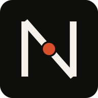

IA com propósito
Escolhemos onde aplicar inteligência a partir de um ganho observável: tempo, qualidade, capacidade ou receita.

NexusCodeVamos conversarConectamos inteligência artificial, software e visão de negócio para transformar o que trava sua operação no que faz sua empresa avançar.
Precisa de quem entenda o negócio.
E saiba construir o que vem depois.
A NexusCode reúne a experiência de Ricardo Grossi em operações e automação com IA à engenharia de produto de Glauber Barcelos. Duas trajetórias complementares, uma linha direta entre o problema e a entrega.
Um ecossistema de competências para automatizar, criar e escalar. Começamos pelo resultado que você precisa alcançar.
Agentes, copilotos e automações conectados aos sistemas que sua equipe já usa. Menos tarefas repetitivas, mais capacidade para decidir e crescer.
Entender o contexto, organizar informações e preparar a próxima etapa. Veja como a IA pode conectar uma conversa ao trabalho que vem depois.
A IA organiza o trabalho.
As pessoas conduzem as decisões.
Conversa e dados fictícios. O fluxo ilustra possibilidades; as integrações são definidas em cada projeto.
O desafio, a engenharia e o impacto. Explore projetos das trajetórias de Ricardo e Glauber que agora fortalecem a NexusCode.
Abra um case para ver o desafio, a entrega e o impacto.
Indicadores divulgados nos portfólios de origem. Projetos de saúde realizados por Glauber para a TRUE Tecnologia para Vida. Cada entrega tem seu próprio contexto e participação profissional.
A confiança vem de quem viveu a entrega. Relatos sobre projetos e parcerias da trajetória de Ricardo na NexusCode.
“... parou de preencher planilha e voltou a fazer engenharia.”
Elaboração técnica automatizada e mais capacidade para o mesmo time.
“Entrega rápido, resolve problema de verdade.”
IA para ler a nota fiscal por foto e facilitar o cadastro de produtos.
“... empreendedor com visão estratégica ...”
Experiência em diferentes parcerias de negócios e projetos com Ricardo Grossi.
Trechos dos relatos publicados no site original da NexusCode. Os depoimentos se referem às experiências anteriores de seus autores; a nova parceria soma essas trajetórias.
Contato direto com os profissionais que desenham e constroem a solução. Visão estratégica e execução técnica na mesma conversa.
Conheça quem está à frenteEscolhemos onde aplicar inteligência a partir de um ganho observável: tempo, qualidade, capacidade ou receita.
Integramos os sistemas existentes quando faz sentido. A solução nasce da sua rotina, dos seus dados e dos seus usuários.
Produto, arquitetura, desenvolvimento e acompanhamento conectados. Uma visão de ponta a ponta para reduzir ruído e acelerar decisões.
Bagagem de negócio para identificar o que importa. Profundidade técnica para fazer acontecer.
Uma década à frente de uma operação industrial trouxe a visão de quem conhece gargalos, margem e crescimento por dentro. Hoje, constrói agentes de IA e automações conectadas ao negócio, com participação no desenvolvimento da arOS.
Mais de 20 anos de engenharia de software em produtos digitais, saúde, startups e operações críticas. Une visão de produto, arquitetura e desenvolvimento hands-on para entregar SaaS, aplicativos e experiências com IA aplicada.
A parceria opera sob a marca NexusCode. A experiência se soma. A responsabilidade continua próxima.
Uma construção por etapas, com decisões claras e validação ao longo do caminho.
Mapeamos o problema, a rotina e a oportunidade. Definimos juntos o resultado que vale perseguir.
DIAGNÓSTICO & PRIORIDADEOrganizamos o escopo, a arquitetura e as integrações. Você entende o caminho antes da construção.
ROADMAP & ARQUITETURAEntregamos por etapas, com testes e validação. Software conectado à operação e às pessoas.
PRODUTO & INTEGRAÇÃOAcompanhamos uso e indicadores para refinar o produto a partir do que acontece na prática.
APRENDIZADO & RESULTADONem sempre. Avaliamos a possibilidade de integrar ERP, CRM, APIs e outras ferramentas existentes. Quando uma nova plataforma é necessária, explicamos o motivo e planejamos a transição.
Construímos também SaaS, aplicativos, sites, portais e integrações. A IA faz parte da nossa especialidade e entra no projeto quando existe um ganho claro para o negócio ou para o usuário.
Sim. Podemos definir uma primeira entrega focada em um problema prioritário, validar o uso e expandir a partir do aprendizado. O tamanho inicial depende do contexto e do resultado esperado.
Depois de entender a oportunidade, organizamos escopo, dependências e etapas. Prazo e investimento são apresentados na proposta específica para o seu projeto.
Com Ricardo ou Glauber, os profissionais à frente da parceria. A conversa inicial conecta seu contexto de negócio com as decisões de produto e engenharia.
Conte o que você quer automatizar, construir ou escalar. Vamos encontrar o ponto de partida.
contato@nexuscode.app.br